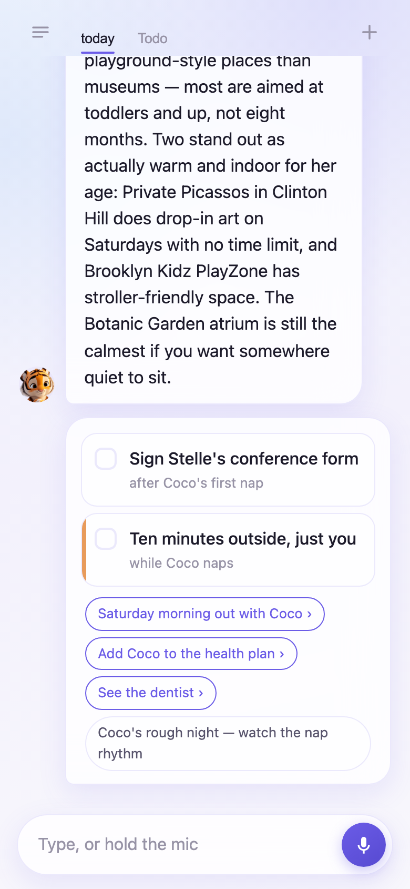
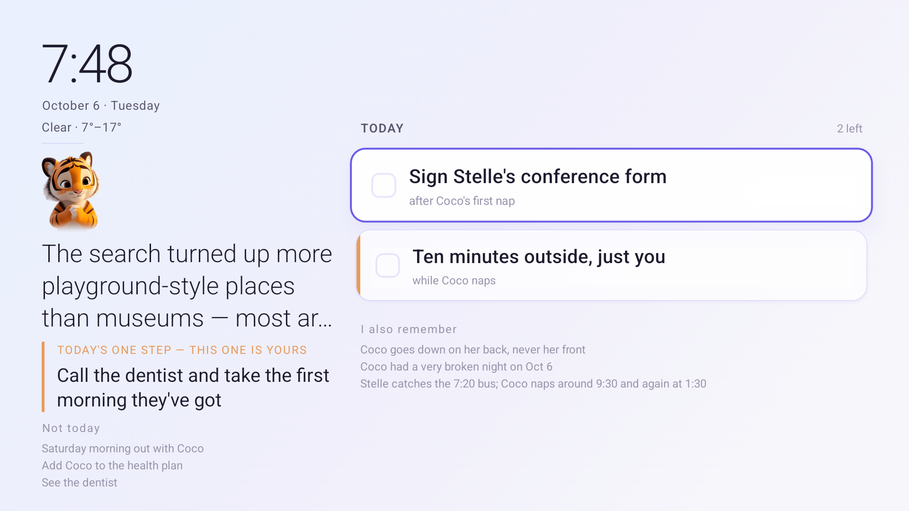
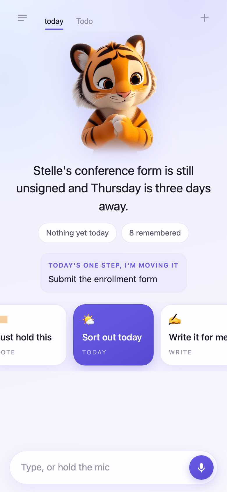
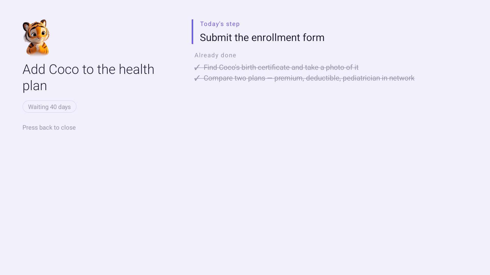

Most of the day the television is off. Turn it on and it sells you something, or hands you a feed with no end. Today makes it something else — a screen that stays on in the room you live in, holding the shape of your day.
Built for the Fire TV track · Build, Ship, Shape
And remembering is the thing you are short of. The television is already on. It costs nothing to look at. So Today is built for the glance, not the session — and there are three of them in a day.
What is still open today, and what is already handled.
The standing notes. The things that must not be forgotten, sitting where you can see them.
The one thing to take. The errand that fits the trip you are already making.
Closer to the board in a hotel lobby than to an app: always on, never asking to be touched, readable from the other side of the room.
The same screen the television shows, in your browser. Same data, same layout — arrow keys to move, Enter to press into something.
No Fire TV to hand? The big screen also runs in a browser at
/tv — the same screen, the same data, nothing to install.
It comes up with the rest of the project
(cd Today && ./start.sh), because the server that holds
her day runs on her own machine and the model key never leaves it.
You never stand in front of a TV to plan your day — that was never the TV's job. The phone is where you say things, however they come out. The television is where you glance.


Same sentence, both screens: “I'm holding the form for today — it's not going anywhere.” One is a conversation. The other is a glance.
The harder half is that some things never move — not because you don't want to, but because every time you think of one you have to work out where to start, again, from scratch.
“I keep putting off the insurance thing.”
“I'm keeping that one for you. Is this for him, or for you too?”
It breaks it into four steps, each small enough to finish in one sitting, each with a time that fits the day — and gives you one of them. Tomorrow's arrives on its own.
Three to five steps, each finishable in one sitting, each with a moment that actually fits — while she naps, after bedtime.
One. Two questions is a form, and a form is how a thing gets put off for another month.
Never the whole breakdown. You never have to remember where you got to. That is what makes “a little at a time” actually work.
The dentist, the check-up — the ones always bumped by somebody else's. When one has waited too long, Today is the one who raises it.

It opens with the thing that has been waiting longest — not with a greeting, and not with a count. Underneath it, one step, with the time it fits into. The other three steps exist. You are not shown them.
No progress bar. No insurance 2/4. The moment you can see a completion rate, this has become one more board you have to maintain.
From across the room you get one line. Press right on it and you get what's behind it: where the thing stands, how it breaks down, which part is already done, and how long it has been waiting.

Same line as everywhere else in Today: it never pushes the whole breakdown at you — four steps on a screen is four things weighing on you. But when you press in, you asked. So it answers.
Still no numbers. Steps carry a tick, never a count — the moment a screen can tell you two of four, it has started keeping score. And the little chevron only appears on rows that actually have something behind them, so the arrow itself is the only instruction anyone needs.
It is written into the agent itself, so that anyone tempted to add a feature later has to read it first.
Today is already keeping your day.
Demo sign-in — nothing is sent anywhere and no password is asked for.